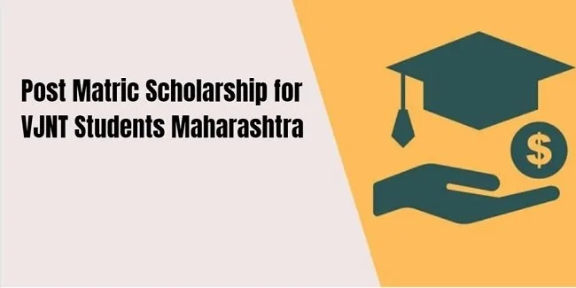

This scheme was started by the Government to encourage the student of the Vimukta Jatis & Nomadic Tribes (VJNT) to undergo Post-Matric higher education.
Objective:
1. To encourage the VJNT students to undergo Post-Matric Courses.
2. Providing financial assistance for education.
3. Creating a passion for higher education.
4. Providing students the opportunity to go to the mainstream of education through education.
Under this scheme, benefits of Tuition Fees, Exam Fees, and Maintenance Allowance are paid to only VJNT category students.
Benefit
All the Eligible students of VJNT are paid maintenance allowance as under:
1.If Applicant selects Course Group A - for hostlers ₹425/- p.m. & Day Scholars (Non-Hostlers) ₹190/- p.m. (Duration -Admission date to till exam completion date).
2.If Applicant selects Course Group B - for hostlers ₹290/- p.m. & Day Scholars (Non-Hostlers) ₹190/-p.m. (Duration - Admission date to exam completion date).
3.If Applicant selects Course Group C - for hostlers ₹290/- p.m. & Day Scholars (Non-Hostlers) ₹190/- p.m. (Duration - Admission date to till exam completion date).
4.If Applicant selects Course Group D - for hostlers ₹230/- p.m. & Day Scholars (Non-Hostlers) ₹120/- p.m. (Duration - Admission date to till exam completion date).
5.If Applicant selects Course Group E - for hostlers ₹150/- p.m. & Day Scholars (Non-Hostlers) ₹90/- p.m. (Duration - Admission date to till exam completion date).
6.Tuition Fees, Exam Fees, and Maintenance allowance are paid 100% to applicants who are studying in government /aided/non-aided institutions in professional courses and non-professional courses.
7.If the Applicant gets admission in a government hostel then he will be eligible for only 1/3rd amount of the hostler.
8.For B.Ed and D.Ed courses: 100 % benefit (Tuition Fees, Exam Fees, and Maintenance Allowance) is applicable for D.Ed, and B.Ed courses.
9.For students studying in Aided, UnAided for D.Ed and B.Ed courses the Fee structure is applicable as per Government rates for the same course.
Eligibility
1.The parent's/Guardian's annual income should be less than or equal to ₹1.50 Lac.
2.Applicants should belong to the VJNT category.
3.Applicants must be residents of Maharashtra.
4.Applicants must be pursuing the education course approved by the government from the class Post-Matric.
5.Maintenance allowance & exam fees are paid to the applicant if the applicant gets promoted to the next higher class.
6.If the applicant fails in a particular year then he will get the Tuition Fees, Exam Fees, and Maintenance allowance of that particular academic year but he/she will not get the benefit until he/she gets promoted to the next higher class.
7.Applicant should come through CAP round for only professional courses.
8.Only two children (i) any number of girl applicants allowed. ii) Boys applicant maximum 2 of the same parent) of the same parents will be eligible for the Scholarship.
9.75 % attendance is mandatory for the current year.The applicant will be eligible for a scholarship if he/she changes the course Non – Professional to Professional but he will not be eligible if he/she changes the course from Professional to Non – Professional.
10.Scholarships/freeship will continue until the applicant completes one course. Ex. - 11th, 12th Arts - B.A., M.A., M.Phil., P.H.D.
11.If, the applicant completed B.A and B.Ed. course and later after taking admission for M.A., for M.A. course he/she will not be allowed for scholarship/freeship. But after admission to M.B.A. after B.Ed, it can be eligible for scholarship/freeship as it is a professional postgraduate course.
12.Applicant studying in particular professional/Non-Professional course and availing benefits of scholarship/freeship for that academic course and if he/she wants to change his existing Professional / Non-Professional course in between academic years he/she will not be eligible for freeship/scholarship for further course.
Documents Required
1.Caste certificate.
2.Income certificate / Income Declaration.
3.Caste Validity Certificate (Mandatory for Professional Degree courses, Professional Post Graduate. For Non Professional courses caste validity is not mandatory).
4.HSC or SSC marks sheet or last examination marks sheet.
5.Gap certificate - Not mandatory but in case of gap it is mandatory.
6.If applicable father/Guardians death certificate.
7.Ration Card for identify number of children in family.
8.Leaving Certificate.
9Declaration certificate of parents/guardians about number of children beneficiaries.
Application Process:
Step 01: Registration: Visit the official website to register yourself by clicking on “New Applicant registration” and fill in all the mandatory details (Applicant’s Name, Username, Password, Email, and Mobile Number): https://mahadbt.maharashtra.gov.in/RegistrationLogin/RegistrationLogin
Step 02: Login: Now, you may login by filling login details: https://mahadbt.maharashtra.gov.in/Login/Login.
Step 03: Create profile: Create your profile by filling in all your updated personal details like address, qualifications, etc.
Step 04:Apply Scheme: After filling in 100% of the profile information, you may apply for the eligible schemes.